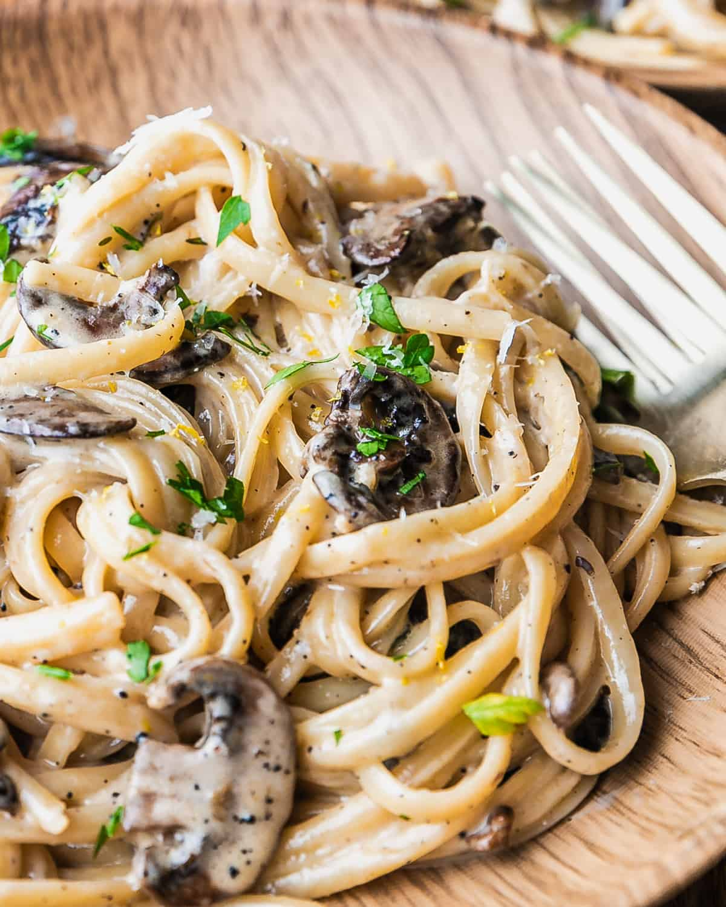

Truffle Pasta

Truffle pasta with white sauce and mushrooms
This pasta will be made using all-purpose cream for the sauce, canned mushrooms
and a bottle of Tartufi Jimmy Truffle Sauce for the truffle.
Ingredients:
- 1x Tartufi jimmy truffle sauce
- 500g Pasta of your choice.
- 2 Packs of All-purpose cream
- 1x Can of mushroom
- 1x Butter
- Parsley
- Salt and Pepper (To taste)
- Parmesan cheese
- Chicken breast fillet, sliced to strips (Optional)
Steps:
- Cook the pasta. Follow the instructions on the packaging.
- Heat pan and melt the butter to be used as oil. Open the can of mushroom and drain the water.
Put the mushroom into the pan and stir fry it for few minutes.
- Pour the 2 packs of all-purpose cream and let it cook and simmer for 5 minutes.
- Shake the tartufi jimmy bottle well then pour the truffle into the pan. Mix it well until the truffle
is spread evenly on the sauce.
- You can add salt and pepper to your taste
- Once cooked, you can combine the pasta and the truffle sauce. You can serve it in platter and add
Parmesan Cheese and Parsley for garnish.
- Optional Step: Heat pan to medium and cook the chicken breast strips until brown using butter.
You can add it into the sauce once done.
Home